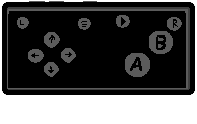

PhonePad
PhonePad
Try pressing the buttons!
PhonePad is based on two apps, one is in your PC and is responsible for RECEIVING the inputs and emulating a full controller.
The second part is in your phone, catching your inputs and SENDING them to your PC.

Motions
Add motion controls support to any game you want!

Wireless
Easily connect to your PC with a single tap or use QR Code (soon)

Customizable
Modify the UI to better suit your game and needs (soon)